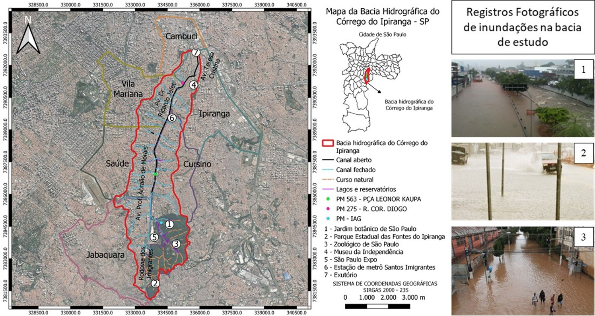

Sobre a Bacia Hidrográfica do Córrego do Ipiranga
A bacia hidrográfica do córrego do Ipiranga tem área de drenagem de 23,1 km² e está localizada na cidade de São Paulo, Estado de São Paulo, região Sudeste do Brasil, abrangendo parte dos bairros Cambuci, Cursino, Ipiranga, Jabaquara, Saúde e Vila Mariana.

O Córrego Ipiranga, originalmente com 63 km de extensão e 1,8 km² de planície de inundação, escoa em leito parcialmente modificado pela ação antrópica, canalizado em sua maior parte e desagua no Rio Tamanduateí. Atualmente, o trecho natural é de apenas 9 km e 85% da planície de inundação está ocupada por vias e edificações. A nascente está localizada nas proximidades do Parque Estadual das Fontes do Ipiranga / Jardim Botânico, junto à Rodovia dos Imigrantes. O curso d’água apresenta vias de fundo de vale marginais ao seu leito ao longo de toda a sua extensão, começando, a montante, com a Rodovia dos Imigrantes, depois com a Av. Prof. Abraão de Moraes e, em seu trecho inferior, a Av. Dr. Ricardo Jafet, ambas vias de intenso tráfego de veículos, ônibus e caminhões, que constituem um dos mais relevantes eixos de mobilidade na Zona Sul de São Paulo.